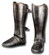

Heyday

Wild Horses
Myrmidon Greaves
Defense: 62-71
Required Level: 65
+125-200% Enhanced Defense
+10-15 Kick Damage
+40% Faster Run/Walk Speed
+40% Faster Hit Recovery
+25 to Strength
+25 to Dexterity
+10-20% Deadly Strike
Unique Boots
Wild Horses
- Type
- Boots
- Base
- Myrmidon Greaves
- Tier
- Elite
- Required level
- 65
- Item level
- 65
- Required strength
- 208